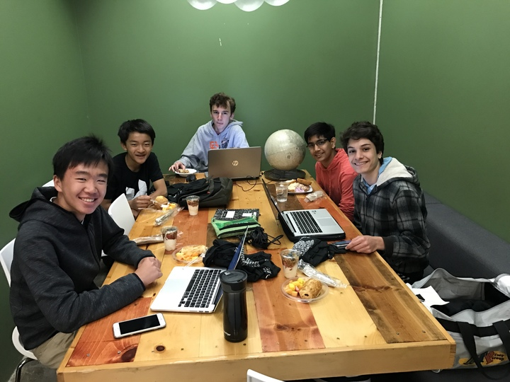

The AngelHack Global Hackathon Series held at San Francisco Tehama St was quite an event. Numerous programers from all ages had come together in various teams hoping to solve real-world problems. We as a team of 5 had gone to this Hackathon in hopes of creating a solution for those who have trouble choosing restaurants.
Arriving early to the AngelHacks had granted us with a nice working area and more time to think about how to develop our website. Despite originally hoping to design a survey that will help the computer give specific restaurant suggestions based on input from the user, we had eventually thought of integrating machine learning in hopes of having the computer continously learn more data from the user. This data based on past restaurant choices etc. would give the computer an idea of what to suggest to it's user. In addition, we had decided on including a feature to our website that allows the user to input in an area in the world and be given suggestions for restaurants for that specific area.
That night, stress and desire had motivated us to stay awake for almost the entire night. Although we may have felt sleep deprived, we felt inclined to work on our website in hopes of winning in the award cermony. After somewhat completing our website as planned, we had attended the award cermony and our journey back home.